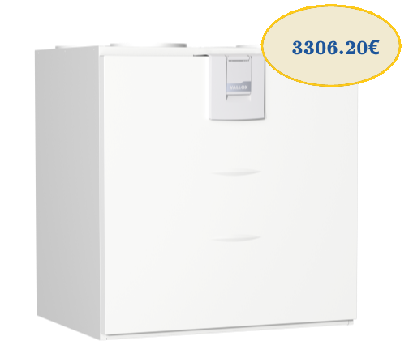

Vallox 145 MV
для больших частных домов
VVallox 145 MV – это современная вентиляционная установка с классом энергопотребления А+ для больших частных домов (макс. 250м2). Встроенные датчики влажности и углекислого газа Vallox 145 MV, а также дополнительные датчики (отдельные датчики влажности, углекислого газа и летучих органических соединений) облегчают повседневную жизнь жильцов и автоматизируют вентиляцию. Вентиляционная установка Vallox 145 MV может быть подключена к бесплатному облачному сервису MyVallox Cloud, через который можно управлять установкой с подключением к Интернету из любого места. Компьютер, зарегистрированный в облачной службе, обновляется автоматически.